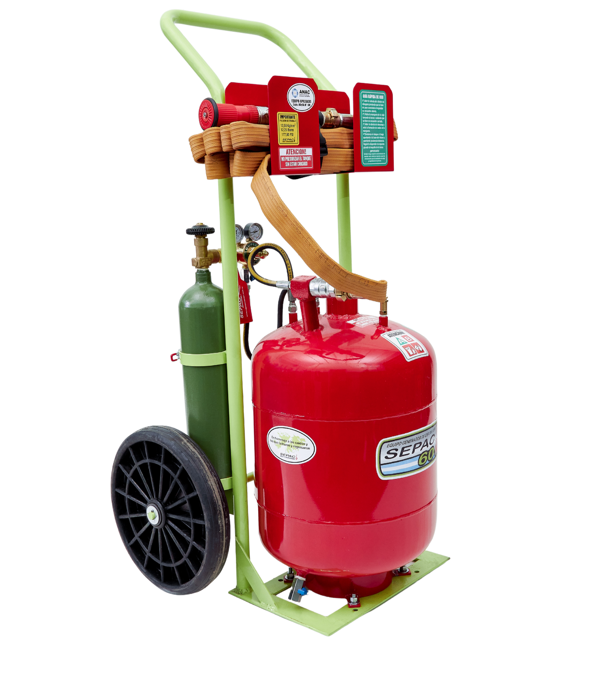

Versatilidad y facilidad de movimiento
SEPAC 60 M
El SEPAC 60 M es un equipo diseñado para ser versátil y fácil de transportar, lo que lo hace ideal para desplazarse por superficies irregulares e incluso subir escaleras. Su configuración simple permite trasladarlo a cualquier lugar que necesite protección temporal, como durante la carga y descarga de combustibles, el manejo de materiales inflamables o para la puesta en marcha de aeronaves y maquinarias agrícolas.
Consultar producto